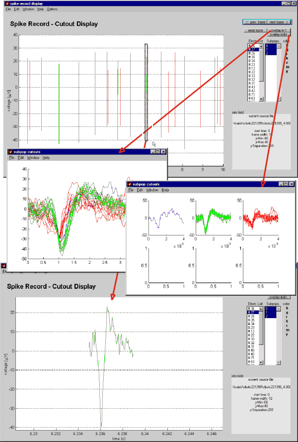

This display is intended to review the cluster assignments in the context
of the spike train, and compare the waveforms in a time slice of you record.
|
You may
-
select a time window (when opening the tool or via the options menu),
-
show overlays of the spike cutouts in that window,
-
zoom in on a particular region of the window. The l, r ,u , and
d keys on your keyboard will move the zoom window to the left, right,
up, and down respectively.
-
'Reset zoom' will return you to the full window.
|
|
 |